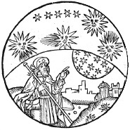

“Tüm insanlar, doğaları gereği bilmeyi arzular.”
-Aristoteles, Metafizik
Aristoteles’in (MÖ 384-322) felsefe ve Batı kültürü üzerindeki etkileri anlatmakla bitmez. Yunanistan’ın kuzeyinde, Makedonya’da doğan Aristoteles, Platon’un okulu Akademi’de öğrenim görmek üzere Atina’ya gitmiştir. Platon’un ölümünden sonra da kendi okulu Lyceum’u kurmuştur.
V. yüzyıl Atina’sında felsefe çalışmaları retorik, doğa bilimi, biyoloji ve diğer araştırma alanlarını kapsıyordu. Dolayısıyla Aristoteles, bilimin neredeyse her dalına önemli katkılarda bulunmuştur.
Aristoteles, felsefenin belli bir sırayla araştırılması gerektiğine inanmıştır. Kişi önce mantığı öğrenmelidir çünkü mantık dünyaya dair olguları bir diğeri ile nasıl ilişkilendireceğimizi açıklar. Aristoteles, tümdengelimsel akıl yürütme (tasım), yani mantıksal olarak geçerli çıkarımlarda bulunma kuramını geliştirmiştir. Temel akıl yürütme formlarını listelemiş ve karmaşık düşünceleri bu formlardan birine indirgemek için kurallar çıkarmıştır. Aristoteles’in en ünlü tümdengelimsel akıl yürütmesi şudur:
Tüm insanlar ölümlüdür.
Sokrates, bir insandır.
O halde Sokrates de ölümlüdür.

Aristoteles, öğrencilerin mantıktan sonra somut doğa olaylarını araştırması gerektiğine inanmıştır. Bu konu üzerine pek çok eser yazmıştır: Fizik, Hayvanların Kısımları Üzerine, Hayvanların Oluşumu üzerine, Hayvanların Hareketleri Üzerine, Meteoroloji, Oluş ve Bozuluş Üzerine.
Ayrıca dünyayı fiziksel olarak açıklamak için genel ilkeler ortaya koymuştur.
Aristoteles’e göre son araştırma konusu, ahlak ve siyaseti de içine alan pratik felsefedir. Bu konuları Nikomakhos’a Etik ve Politika’da ele almıştır. Aristoteles’e göre, ahlak çoğunlukla iyi eğitimle ilgilidir. İnsanların genellikle doğru davranış şeklini bildiklerine ve bu bilgiye uygun hareket etmek için sadece ahlaki olarak yeterince güçlü olmaları gerektiğine inanır. İyi bir insan olmak, doğru şeyi yapma eğilimine sahip olmak anlamına gelir ve bu eğilim içimizde yetiştirilebilir. Siyasi açıdan da Aristoteles, devletin amacının, yurttaşlarının mutlu ve kendi kendilerine yetecek şekilde yaşamaları için gerekli ortamı sağlamak olduğuna inanmıştır. Kısmen demokratik yönetim taraftarı olmasına rağmen, zaman zaman bir monarşinin daha uygun olabileceğini kabul etmiştir.
EK BİLGİLER:
1. Aristoteles bazen “Stagiralı” olarak da anılır çünkü Makedon şehri Stagira’da doğmuştur.
2. Aristoteles, Platon’un Akademi’sinde geçirdiği dönemle kendi okulunu kuruşu arasında, Akdeniz ülkelerinin çoğuna hükmeden Büyük İskender’in hocası olmuştur.